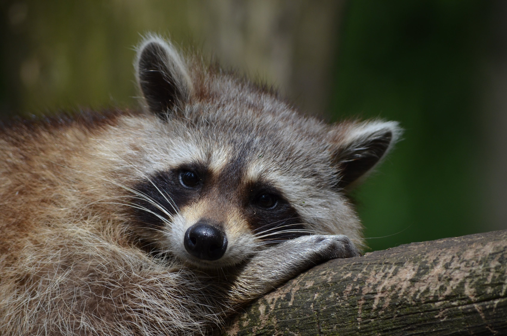

You end up staying with the raccoons for the rest of the evening. It's kind of weird that they're early birds, considering they're supposed to be sleeping during the day, but they have found out that it's their best bet at stocking up on food before anyone else gets a chance to take their trash. You discover that they are actually a really cool group of raccoons and make excellent company, and when you feel safe enough, you come out and say that you are actually not a raccoon, but indeed a cat. They accept you with open arms and become a little more considerate of the food they offer you after that. You love being apart of their group, and feel like you have found a home in them. Congratulations! You have found a home within the raccoon mafia!